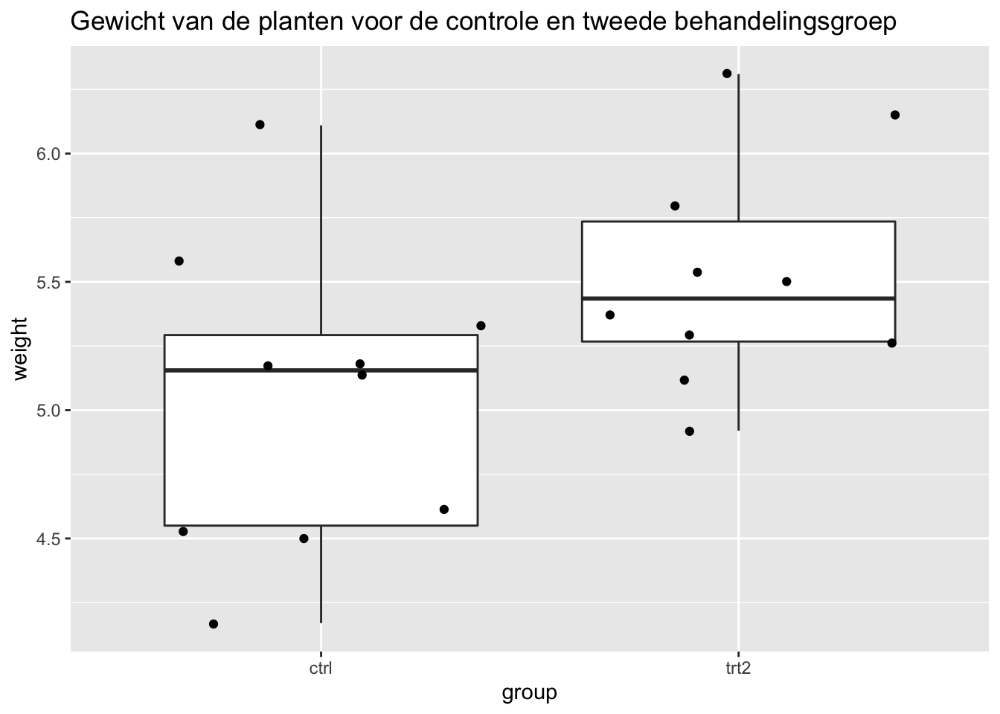

Practicum 1: Oefening Two-sample t-test
Alexandre Segers & Lieven Clement
statOmics, Ghent University (https://statomics.github.io)

1 Two-sample t-test: Plantgroei
Deze studie vergelijkt het droog gewicht van planten tussen een controle behandeling en twee verschillende behandelingen. We willen weten of het gemiddeld gewicht van planten bij behandeling twee (de data van behandeling één gaan we niet gebruiken) verschilt tegenover de controle groep.
1.1 Libraries laden
2 Data exploratie
2.2 Data filteren
We gaan eerst de data filteren zodat enkel de controle- (ctrl) en tweede behandelingsgroep (trt2) gebruikt worden.
2.3 Boxplot van de data
We gaan de gewichten (weight) van de planten per groep (group) plotten door middel van een boxplot om te zien hoe onze distributie eruit ziet. Het lijkt dat de controlegroep een groter gewicht heeft, maar is dit verschil significant?
#Maak een boxplot voor elke groep (group) van het gewicht (weight) van de planten
PlantGrowth %>% ggplot(aes(x=group,y=weight)) +
geom_boxplot() +
geom_jitter() +
ggtitle("Gewicht van de planten voor de controle en tweede behandelingsgroep")
3 T-test
De two sample t-test kan gebruikt worden voor het gemiddelde gewicht te vergelijken tussen twee groepen. Deze heeft als test statistiek:
\[ T = \frac{\bar{Y}_1-\bar{Y}_2}{S_p\sqrt{\frac{1}{n_1}+\frac{1}{n_2}}} \]
3.1 Geef de nul- en alternatieve hypothese van de two-sample t-test:
Stel dat \(\mu_1\) het gemiddeld gewicht van plant met controle treatment voorstelt, en \(\mu_2\) het gemiddeld gewicht van een plant met treatment 2. De nul- en alternatieve hypothese voor een two-sample t-test kan men dan voorstellen als:
\(H_0\): \(\mu_1=\mu_2\)
\(H_A\): \(\mu_1 \neq \mu_2\)
De nulhypothese stelt dat er geen verschil is in gemiddeld gewicht tussen de behandelingen. De alternatieve hypothese stelt dat het gemiddelde gewicht verschilt tussen planten met de controle behandeling en planten met behandeling 2.
3.2 Geef de assumpties van de deze test en ga deze na:
Zoals beschreven in de cursus, veronderstelt t-test een locatie-shift model. Toch zijn er verschillende t-test, namelijk deze met een gepoolde variantie, de Welch t-test en daarnaast gepaarde t-test voor gepaarde data. Deze hebben verschillende assumpties:
Two-sample t-test: gepoolde variantie:
- gelijke variantie in beide groepen
- normaliteit van de data in elke groep
- onafhankelijkheid van observaties
Welch t-test:
- normaliteit van de data in elke groep
- onafhankelijk van observaties
gepaarde t-test:
- normaliteit van het verschil tussen de metingen van gepaarde observaties
- onafhankelijkheid tussen de verschillende gepaarde observaties
Indien niet voldaan is aan de veronderstellingen, volgt de teststatistiek onder de nulhypothese geen t-distributie, en bijgevolg is er geen garantie dat de p-waarde en betrouwbaarheidsintervallen correct zijn. Hier werken we met een two-sample t-test met pooled variantie waardoor we moeten controleren of dat:
- gelijke variantie in beide groepen (= homoscedasticiteit)
- normaliteit van de data in elke groep
Onafhankelijkheid van observaties: we gaan er vanuit dat de onderzoekers hiermee rekening hebben gehouden in hun experimenteel design.
Voor het nagaan van gelijke varianties werken we met boxplots die daarnet gemaakt zijn. Deze assumptie lijkt alvast voldaan te zijn.
Het is echter niet altijd eenvoudig om te beoordelen of de varianties sterk van mekaar verschillen bij klein aantal samples (10 per treatment in dit geval). Om een beter idee te krijgen, kunnen we eens een aantal boxplots simuleren met dezelfde steekproefgrootte als in de dataset en in de veronderstelling dat de varianties gelijk zijn. Ook kan het onmogelijk zijn om deze assumptie te controleren bij zeer kleine sample size.
set.seed(52)
par(mfrow=c(3,3), mar=c(3,2,1,1))
st_dev <- PlantGrowth %>% group_by(group) %>% summarise(stdev = sd(weight))
means<- PlantGrowth %>% group_by(group) %>% summarise(m=mean(weight))
counts <- PlantGrowth %>% count(group)
sd_pooled = sqrt(((counts$n[1]-1) * st_dev$stdev[1]^2 + (counts$n[2]-1) * st_dev$stdev[2]^2) / (counts$n[1] + counts$n[2] - 2))
plots <- list()
for(i in 1:9){
a <- rnorm(counts[1,2], mean=means$m[1], sd=sd_pooled)
b <- rnorm(counts[2,2], mean=means$m[2], sd=sd_pooled)
df <- data.frame("weight" = c(a,b), "group" = as.factor(c(rep(1,counts[1,2]),rep(2,counts[2,2]))))
plots[[i]] <- ggplot(data=df, aes(x=group,y=weight)) +
geom_boxplot(outlier.shape = NA) +
geom_jitter(alpha=.2)
}
do.call('grid.arrange',c(plots,nrow=3, ncol = 3))Aangezien het gebruik van een for-loop met het stapgewijs verlengen van een vector computationeel inefficiënt is in R, tonen we hier ook hoe het zou kunnen door middel van de lapply functie.
set.seed(52)
par(mfrow=c(3,3), mar=c(3,2,1,1))
plotList <- lapply(1:9, function(x,means,sd,nobs)
{
data.frame(y = rnorm(
sum(counts$n),
mean=rep(means$m,times=nobs$n),
sd=sd_pooled),
group = rep(nobs$group,times=counts$n)
) %>%
ggplot(aes(group,y)) +
geom_boxplot(outlier.shape = NA) +
geom_jitter(alpha=.2)
}, means=means,nobs=counts,sd=sd_pooled)Dan moet nog de assumptie van normale distributie in elke groep nagegaan worden:
# Maak een QQplot van het gewicht van de planten voor elke treatment
PlantGrowth %>%
ggplot(aes(sample = weight)) +
geom_qq() +
geom_qq_line() +
facet_grid(.~group) +
ylab("Relatieve abundantie")De afwijkingen die we in onze qqplot zien lijken niet zeer uitzonderlijk te zijn. Daarom kunnen we stellen dat beide groepen een normale verdeling lijken te volgen en daarom ook aan deze assumptie voldaan is.
Ook hier kan het soms moeilijk zijn om met een beperkt aantal observaties te zien of normaliteit gevolgd worden. Hier zullen we ook op basis van een simulatiestudie bekijken hoe een steekproef van normaal verdeelde punten kan verschillen.
plotList <- lapply(1:9, function(x,means,sd,nobs)
{
data.frame(y = rnorm(
sum(counts$n),
mean=rep(means$m,times=counts$n),
sd=sd_pooled),
group = rep(counts$group,times=counts$n)
) %>%
ggplot(aes(sample=y)) +
geom_qq() + # qq-punten
geom_qq_line() + # qq-lijn
theme_bw() +
facet_wrap(~group)
}, means=means,nobs=counts,sd=sd_pooled)
plotList## [[1]]##
## [[2]]##
## [[3]]##
## [[4]]##
## [[5]]##
## [[6]]##
## [[7]]##
## [[8]]##
## [[9]]We merken dat de natuurlijke variantie ongeveer even groot is zijn als de variatie die we in onze data zien. Dit betekent dat we verder kunnen tot het uitvoeren van de two-sample t-test.
3.3 Voer de two-sample t-test uit. Wat kan je hieruit concluderen op vlak van hypothesetest en betrouwbaarheidsinterval?
# Voer de two-sample t-test uit om de nulhypothese van gelijk gemiddeld gewicht tussen de controlebehandeling en behandeling 2 na te gaan.
model_t <- t.test(weight~group, data = PlantGrowth, var.equal=TRUE) # var.equal = FALSE is de default, wat de Welch t-test zou zijn
model_t##
## Two Sample t-test
##
## data: weight by group
## t = -2.134, df = 18, p-value = 0.04685
## alternative hypothesis: true difference in means between group ctrl and group trt2 is not equal to 0
## 95 percent confidence interval:
## -0.980338117 -0.007661883
## sample estimates:
## mean in group ctrl mean in group trt2
## 5.032 5.526We besluiten dat we de nulhypothese van gelijk gemiddeld gewicht kunnen verwerpen (p = 0.047) op het 5% significantieniveau en dat daarom het gemiddelde gewicht van de planten verschilt tussen de twee verschillende behandelingen. Daarnaast merken we op dat de effectgrootte negatief is, wat wil zeggen dat de planten gemiddeld minder wegen bij de controlebehandeling.
Het 95% betrouwbaarheidsinterval valt tussen -0.98 en -0.008. Dit wilt zeggen dat we met 95% zekerheid kunnen stellen dat het gemiddelde gewicht van een plant met de controle behandeling tussen 0.008 en 0.98 gram minder weegt dan de planten uit behandeling 2.
Onze conclusie is:
Er is een significant verschil in gemiddeld gewicht tussen de behandelingen (p = 0.047)
De controlebehandeling heeft met 95% zekerheid een gemiddeld gewicht tussen 0.008 en 0.98 gram lager dan behandeling 2.
4 Lineair model
4.1 Wat is de link tussen de two-sample t-test en het lineair model?
We hebben reeds gezien dat de two-sample t-test een specifieke versie is van een lineair model, namelijk van een lineair model waarbij de covariaat een dummy variabele \(X\) die de waarde 0 en 1 kan aannemen. \[ E[Y_i] = \beta_0 + \beta_1 X_i \] Bijvoorbeeld, indien \(Y_i\) de lengte van persoon \(i\) voorstelt en \(X_i\) het geslacht van die persoon waarbij \(X_i=0\) indien persoon \(i\) een vrouw is, en \(X_i=1\) indien niet. In dat geval, stelt \(\beta_0\) de gemiddelde lengte voor vrouwen voor, en \(\beta_1\) staat voor het verschil in gemiddelde lengte tussen vrouwen en mannen. De gemiddelde lengte voor een man kan men dan bekomen door \(E[Y_{male}] = \beta_0 + \beta_1\). Men kan dit ook schrijven als: \[ E[Y | female] = E[Y | X = 0] = \beta_0\] \[ E[Y | male] = E[Y | X = 1] = \beta_0 + \beta_1\]
4.2 Geef de nul- en alternatieve hypothese van deze test:
Indien we de data modelleren met een lineaire regressie dan kunnen we dezelfde hypothese (gelijkheid van gemiddelden) testen door middel van volgende hypothese:
\(H_0\): \(\beta_1 = 0\)
\(H_A\): \(\beta_1 \ne 0\)
Aangezien \(\beta_1\) het verschil tussen gemiddeld gewicht na behandeling 2 en de controlebehandeling is, betekent dit dat bij \(\beta_1 = 0\) er geen verschil in gemiddeld gewicht is.
4.3 Geef de assumpties van de deze test en ga deze na:
De assumpties van het lineair model zijn dezelfde als bij de pooled two-sample t-test. We hebben hier altijd gelijke variantie nodig, en het is hier dus niet mogelijk om met ongelijke varianties te werken.
We hebben reeds de assumpties van de pooled t-test hierboven getest.
4.4 Modelleer de data via een lineaire regressie en ga na of de nulhypothese van gelijk gemiddeld gewicht verworpen wordt. Wat kan je zeggen over de hypothesetest en de betrouwbaarheidsintervallen? Wat betekenen de verschillende parameters?
# Voer een lineare regressie toe van het gewicht in functie van de behandelingsgroep.
model_lm <- lm(weight ~ group, data = PlantGrowth)
summary <- summary(model_lm)
summary##
## Call:
## lm(formula = weight ~ group, data = PlantGrowth)
##
## Residuals:
## Min 1Q Median 3Q Max
## -0.862 -0.410 -0.006 0.280 1.078
##
## Coefficients:
## Estimate Std. Error t value Pr(>|t|)
## (Intercept) 5.0320 0.1637 30.742 <2e-16 ***
## grouptrt2 0.4940 0.2315 2.134 0.0469 *
## ---
## Signif. codes: 0 '***' 0.001 '**' 0.01 '*' 0.05 '.' 0.1 ' ' 1
##
## Residual standard error: 0.5176 on 18 degrees of freedom
## Multiple R-squared: 0.2019, Adjusted R-squared: 0.1576
## F-statistic: 4.554 on 1 and 18 DF, p-value: 0.04685# Geef de 95% confidence intervals van de geschatte parameters.
confint <- confint(model_lm)
confint## 2.5 % 97.5 %
## (Intercept) 4.688107020 5.3758930
## grouptrt2 0.007661883 0.9803381De parameter grouptrt2 (\(\beta_1\)) heeft een p-waarde gelijk aan 0.047, waarmee we de nulhypothese van gelijk gemiddeld gewicht kunnen verwerpen. Het 95% betrouwbaarheidsinterval van parameter grouptrt2 gaat van 0 0.008 tot 0.98. Dit wil zeggen dat het gemiddeld gewicht van behandelingsgroup 2 met 95% zekerheid tussen 0.008 en 0.98 groter is dan in de controlebehandeling.
Anderzijds kunnen we met 95% zekerheid stellen dat het gemiddeld gewicht van de controlebehandeling tussen 4.688 en 5.376 ligt, wat we kunnen zien bij parameter Intercept. De p-waarde die hierbij staat (p < 2e-16), is de p-waarde voor de nulhypothese dat het intercept (\(\beta_0\)), wat overeen komt met het gemiddeld gewicht voor planten met de controlebehandeling, gelijk is aan 0 . Deze hypothese is onzinnig (anders zouden we geen plant hebben…) en heeft daarom geen interessante interpretatie.
Weer is onze conlusie:
Er is een significant verschil in gemiddeld gewicht tussen de behandelingen (p = 0.047)
De controlebehandeling heeft met 95% zekerheid een gemiddeld gewicht tussen 0.008 en 0.98 lager dan behandeling 2.
De controlebehandeling heeft met 95% zekerheid een gemiddeld gewicht tussen 4.688 en 5.376.
5 Conclusie:
We kunnen concluderen dat zowel de two-sample t-test analyse als de lineaire regressie dezelfde resultaten geven.
Er is een significant verschil in gemiddeld gewicht tussen de behandelingen (p = 0.047)
De controlebehandeling heeft met 95% zekerheid een gemiddeld gewicht tussen 0.008 en 0.98 lager dan behandeling 2.
De controlebehandeling heeft met 95% zekerheid een gemiddeld gewicht tussen 4.688 en 5.376.